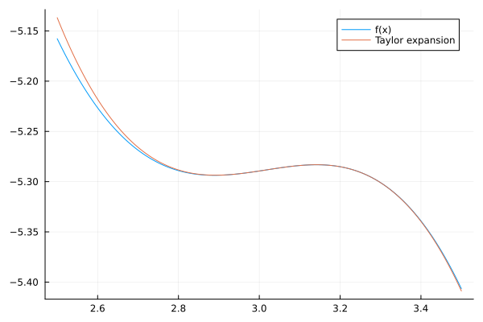
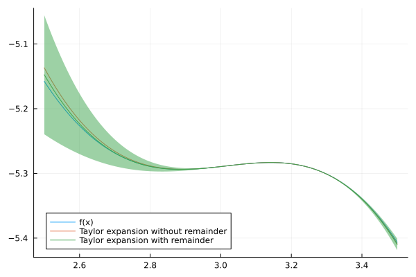
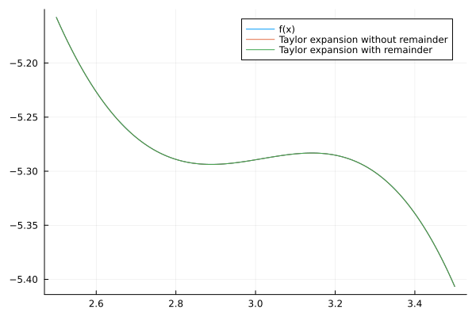

Week 8 Lecture 2: Applications of Taylor arithmetic
Last lecture we looked at how to automatically compute truncated Taylor series of functions. In Arblib this is done using the ArbSeries type. For example, to compute the Taylor expansion of degree 3 of the function $e^{\sin(2x)} - \frac{\tan(x)}{x}$ at $x = \pi$ we can do
julia> using Arblibjulia> setprecision(Arb, 53) # We don't need too many digits53julia> x = ArbSeries((π, 1), degree = 3) # x as a Taylor series of degree 3[3.14159265358979 +/- 3.34e-15] + 1.0⋅x + 𝒪(x^4)julia> exp(sin(2x)) - tan(x) / x[1.0000000000000 +/- 1.08e-15] + [1.68169011381621 +/- 3.80e-15]⋅x + [2.10132118364234 +/- 6.78e-15]⋅x^2 + [-0.13835482982780 +/- 9.27e-15]⋅x^3 + 𝒪(x^4)
In this lecture we will look at two applications of Taylor arithmetic, how to compute enclosures of functions and how to handle removable singularities.
Enclosing functions with Taylor arithmetic
We can make use of Taylor's theorem to enclose functions through their Taylor expansion. Recall Taylor's theorem:
Let $f$ be $n + 1$ times differentiable on the interval $[a, b]$ and let $x_0 \in [a, b]$. Then, for any $x \in [a, b]$ we have
\[f(x) = \sum_{k = 0}^n f_k (x - x_0)^k + R_n(x)\]
where
\[R_n(x) = \frac{f^{(n + 1)}(\xi)}{(n + 1)!}(x - x_0)^{n + 1},\]
for some $\xi$ between $x_0$ and $x$. In particular
\[R_n(x) \in \frac{f^{(n + 1)}([a, b])}{(n + 1)!}(x - x_0)^{n + 1}.\]
Let us apply this to the function $f(x) = \sin(2x) - 2x - \cos(x)$, taking $x_0 = \pi$ and $[a, b] = [2.5, 3.5]$. The first step is to compute the Taylor expansion at $x_0$.
julia> f(x) = sin(2x) - 2x - cos(x)f (generic function with 1 method)julia> x_0 = Arb(π)[3.14159265358979 +/- 3.34e-15]julia> a = Arf(2.5)2.5julia> b = Arf(3.5)3.5julia> n = 33julia> f_x0_series = f(ArbSeries((x_0, 1), degree = n))[-5.28318530717959 +/- 6.55e-15] + [+/- 5.53e-16]⋅x + [-0.50000000000000 +/- 1.56e-15]⋅x^2 + [-1.33333333333333 +/- 3.68e-15]⋅x^3 + 𝒪(x^4)
We can plot this Taylor expansion on the interval $[2.5, 3.5]$ and compare it to $f$.
using Plots
plot(range(Arb(a), b, 1000), f, label = "f(x)")
plot!(range(Arb(a), b, 1000), x -> f_x0_series(x - x_0), label = "Taylor expansion")
We see that the Taylor expansion gives a good approximation close to $\pi$ but that the errors grow at the endpoints, just as we would expect. The next step is to bound the remainder term. For this we need to compute an enclosure of $f^{(3)}([2.5, 3.5])$, which we can also do using Taylor arithmetic! The only difference from before is that instead of taking the constant term to be $x_0$ we take it to be an enclosure of the entire interval $[a, b]$. Note that the coefficient in the Taylor expansion already includes the factor $\frac{1}{(n + 1)!}$.
julia> ab = Arb((a, b))[3e+0 +/- 0.501]julia> f_ab_series = f(ArbSeries((ab, 1), degree = n + 1))[+/- 7.16] + [+/- 1.79]⋅x + [+/- 1.82]⋅x^2 + [+/- 1.44]⋅x^3 + [+/- 0.606]⋅x^4 + 𝒪(x^5)julia> R = f_ab_series[n + 1][+/- 0.606]
We can then use this to compute an enclosure of $f$ through its Taylor series. Let us do this at $x = 3$ as an example.
julia> x = Arb(3)3.0julia> f_x = f_x0_series(x - x_0) + R * (x - x_0)^(n + 1)[-5.289 +/- 6.69e-4]julia> f(x) # Value to compare to[-5.28942300159848 +/- 1.28e-15]
xs = range(Arb(a), b, 1000)
f_xs = f_x0_series.(xs .- x_0) + R * (xs .- x_0).^(n + 1)
plot(xs, f, label = "f(x)")
plot!(xs, x -> f_x0_series(x - x_0), label = "Taylor expansion without remainder")
plot!(xs, f_xs, ribbon = Arblib.radius.(Arf, f_xs), label = "Taylor expansion with remainder")
In the above plot the ribbon argument is used to visualize the size of the error term. This visualization is however not completely rigorous. It only computes the error on a discrete set of points along the function. For a rigorous plot of the error one needs an interval box plot along the lines of those from Week 7 Lecture 1.
As we can see in the plot we get good enclosures near $x_0 = \pi$ but further away the error bounds grow. We can mitigate this using a higher order Taylor expansion. Computing the series and the remainder term we get
julia> n_2 = 1010julia> f_x0_series_2 = f(ArbSeries((x_0, 1), degree = n_2))[-5.28318530717959 +/- 6.55e-15] + [+/- 5.53e-16]⋅x + [-0.50000000000000 +/- 1.56e-15]⋅x^2 + [-1.33333333333333 +/- 3.68e-15]⋅x^3 + [0.041666666666666 +/- 8.06e-16]⋅x^4 + [0.266666666666667 +/- 5.26e-16]⋅x^5 + [-0.0013888888888889 +/- 7.38e-17]⋅x^6 + [-0.0253968253968254 +/- 2.48e-17]⋅x^7 + [2.480158730159e-5 +/- 7.10e-18]⋅x^8 + [0.00141093474426808 +/- 4.01e-18]⋅x^9 + [-2.75573192240e-7 +/- 3.37e-19]⋅x^10 + 𝒪(x^11)julia> f_ab_series_2 = f(ArbSeries((ab, 1), degree = n_2 + 1))[+/- 7.16] + [+/- 1.79]⋅x + [+/- 1.82]⋅x^2 + [+/- 1.44]⋅x^3 + [+/- 0.606]⋅x^4 + [+/- 0.272]⋅x^5 + [+/- 0.0842]⋅x^6 + [+/- 0.0256]⋅x^7 + [+/- 6.07e-3]⋅x^8 + [+/- 1.42e-3]⋅x^9 + [+/- 2.71e-4]⋅x^10 + [+/- 5.14e-5]⋅x^11 + 𝒪(x^12)julia> R_2 = f_ab_series_2[n_2 + 1][+/- 5.14e-5]
Plotting this we get
f_xs_2 = f_x0_series_2.(xs .- x_0) + R_2 * (xs .- x_0).^(n_2 + 1)
plot(xs, f, label = "f(x)")
plot!(xs, x -> f_x0_series_2(x - x_0), label = "Taylor expansion without remainder")
plot!(xs, f_xs_2, ribbon = Arblib.radius.(Arf, f_xs_2), label = "Taylor expansion with remainder")
Since we already have a way of evaluating $f$, One might wonder what the benefit of evaluating it through its Taylor series is. There are a couple of benefits with the Taylor series evaluation:
It can be faster when evaluating $f$ on many points. Computing the Taylor expansion and the remainder term is relatively costly, but once they are computed you can evaluate them very fast. So if you want to evaluate $f$ on a large number of points in the interval $[a, b]$ it might be faster to compute the Taylor series and use that.
It often gives better enclosures when evaluated on wide intervals. For example, evaluating $f$ directly on the interval $[2.5, 3.5]$ gives us
julia> f(ab)[+/- 7.16]julia> getinterval(f(ab))(-7.15778067554163, -3.3430133819096)Whereas evaluating the Taylor series gives us
julia> f_x0_series(ab - x_0) + R * (ab - x_0)^(n + 1)[-5e+0 +/- 0.789]julia> getinterval(f_x0_series(ab - x_0) + R * (ab - x_0)^(n + 1))(-5.78838861446138, -4.79051130908783)Depending on the context you can do fast, exact evaluations on the polynomial, and then add the remainder term at the end. For example, for enclosing the maximum of $f$ we can use that
\[\max_{x \in [a, b]} f(x) = \max_{x \in [a, b]} \sum_{k = 0}^n f_k (x - x_0)^k + R_n(x).\]
If we let $P_f$ denote the polynomial in the right hand side, then we can use the enclosure of $R_n$ to enclose this as
\[\max_{x \in [a, b]} f(x) \in \max_{t \in [a - x_0, b - x_0]} P_f(t) + \frac{f^{(n + 1)}([a, b])}{(n + 1)!}([a, b] - x_0)^{n + 1}.\]
The problem, therefore, reduces to computing the maximum of a polynomial. The ArbExtras package implements the
ArbExtras.maximum_polynomialfor exactly this purpose. We can thus compute the above asjulia> using ArbExtrasjulia> P_f = f_x0_series.poly # Set P_f to the polynomial associated with our expansion[-5.28318530717959 +/- 6.55e-15] + [+/- 5.53e-16]⋅x + [-0.50000000000000 +/- 1.56e-15]⋅x^2 + [-1.33333333333333 +/- 3.68e-15]⋅x^3julia> max_P_f = ArbExtras.maximum_polynomial(P_f, lbound(a - x_0), ubound(b - x_0))[-5.13686463783211 +/- 4.76e-15]julia> max_f = max_P_f + R * (ab - x_0)^(n + 1)[-5e+0 +/- 0.240]julia> getinterval(max_f)(-5.2395337590049, -5.03424625941878)The function
ArbExtras.maximum_seriesimplements this approach.julia> ArbExtras.maximum_series(f, a, b, degree = 3)([-5.1 +/- 0.0791], [-5.28942300159848 +/- 1.28e-15])Remark This code calling
ArbExtras.maximum_polynomialis not quite rigorous. The issue is withlbound(a - x_0)andubound(b - x_0). They mean that we are not actually computing the maximum of $P_f$ on the interval $[a - x_0, b - x_0]$, but on a potentially slightly larger interval. This will still give us an upper bound for the maximum (which is often what you need), since enlarging the interval can only increase the maximum. To get a proper enclosure of the maximum you, however, have to do a bit of extra work.
For the remainder term in the Taylor series to be small, you need either $\frac{f^{(n + 1)}([a, b])}{(n + 1)!}$ or $(x - x_0)^{n + 1}$ to be small. In particular the latter condition means that Taylor expansions work best on relatively thin intervals. It is therefore often favorable to combine Taylor series with bisection. For example, the function ArbExtras.maximum_enclosure computes the maximum of a function by combining ArbExtras.maximum_series with adaptive bisection.
julia> ArbExtras.maximum_enclosure(f, a, b, degree = 3, verbose = true)[ Info: iteration: 0, starting intervals: 1, [ Info: iteration: 1, remaining intervals: 1, maximum: [-5.1791, -5.10336] [ Info: iteration: 2, remaining intervals: 1, maximum: [-5.15829, -5.15356] [ Info: iteration: 3, remaining intervals: 1, maximum: [-5.15779, -5.1575] [ Info: iteration: 4, remaining intervals: 0, maximum: [-5.15778065911620 +/- 6.76e-15] [-5.15778065911620 +/- 6.76e-15]
Removable singularities
Traditional interval arithmetic (and to a large extent also classical numerics) has trouble evaluating functions with removable singularities. For example, the function $g(x) = \frac{\sin(x)}{x}$ is perfectly smooth near zero but cannot be directly evaluated numerically due to the division by zero.
julia> g(x) = sin(x) / xg (generic function with 1 method)julia> g(0.0) # Float64NaNjulia> g(Arb(0))nan
Using Taylor series we can however easily compute an enclosure. For this we have the following lemma, which is an immediate consequence of Taylor's theorem.
Let $f$ be $n + 1$ times differentiable on the interval $[a, b]$ and let $x_0 \in [a, b]$. If $f$ has a zero of order $m < n$ at $x_0$, then for $x \in [a, b]$ we have
\[\frac{f(x)}{x^{m}} = \sum_{k = m}^{n}f_{k}(x_0)(x - x_0)^{k - m} + \frac{f^{(n + 1)}(\xi)}{(n + 1)!}(x - x_0)^{n - m + 1},\]
for some $\xi$ between $x_0$ and $x$. If $P_f$ denotes the polynomial for the Taylor expansion of $f$ then the above sum is exactly $\frac{P_f}{x^m}$.
Let us apply this to the function $\frac{\sin(x)}{x}$ on the interval $[-0.5, 0.5]$. First we compute the Taylor series and the remainder term for $\sin$.
julia> n = 55julia> sin_series = sin(ArbSeries((0, 1), degree = n))1.0⋅x + [-0.166666666666667 +/- 3.71e-16]⋅x^3 + [0.00833333333333333 +/- 4.61e-18]⋅x^5 + 𝒪(x^6)julia> @assert iszero(sin_series[0]) # Constant term is zerojulia> R_sin = sin(ArbSeries((Arb((-0.5, 0.5)), 1), degree = n + 1))[n + 1][+/- 6.66e-4]
Dividing the series by $x$ corresponds to shifting the coefficients by one step. Note that the resulting expansion has degree one less.
julia> sin_series_div_x = ArbSeries(sin_series[1:end])1.0 + [-0.166666666666667 +/- 3.71e-16]⋅x^2 + [0.00833333333333333 +/- 4.61e-18]⋅x^4 + 𝒪(x^5)
We can then enclose $\frac{\sin(x)}{x}$ at say $x = 0.125$.
julia> x = Arb(0.125)0.125julia> sin_series_div_x(x) + R_sin * x^n[0.9973979 +/- 5.25e-8]julia> sin(x) / x # Compare with this[0.997397867081821 +/- 5.48e-16]
We can now also evaluate it at $x = 0$
julia> x = Arb(0)0julia> sin_series_div_x(x) + R_sin * x^n1.0
Of course, this gives exactly the constant term in sin_series_div_x. More importantly we can evaluate it in an interval enclosing zero, say $[-0.125, 0.125]$.
julia> x = Arb((-0.125, 0.125))[+/- 0.126]julia> sin_series_div_x(x) + R_sin * x^n[1.00 +/- 2.61e-3]